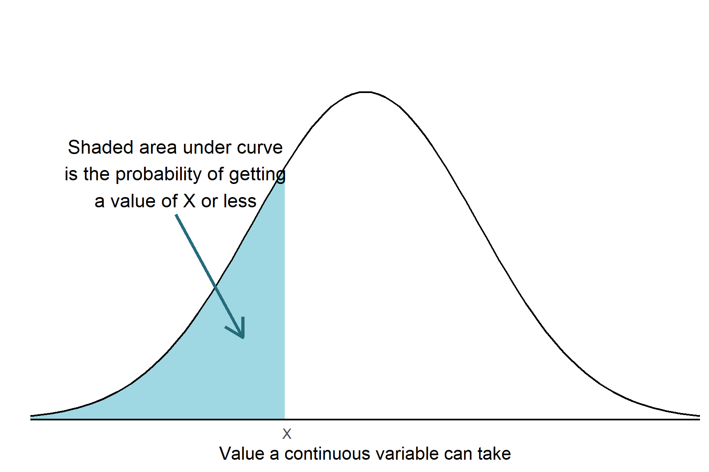

You are reading a work in progress. This page is a dumping ground for ideas and not really readable.
This chapter covers some important concepts data. Data is made up of properties we have measured or recorded, known as variables, and observations, the individual things with those properties. Data is most commonly (and helpfully) organised with variables in columns and each observation on a row.
We can define a variable in two main ways:
by what kinds of value it can take and how frequently each of its possible values occur
by what role the variable takes in analysis
Both of these determine how we summarise, plot and analyse data.
5.1 Role in analysis
When we do research, we typically have variables that we choose or set and variables that we measure. The variables we choose or set are called independent or explanatory variables. The variables we measure are called dependent or response variables.
TODO: examples
5.2 Kinds of value: data types
The types of values a variable can take determines how we summarise, plot and analyse them. Sometimes this is obvious - when you can recorded the colour of an observation you can’t find the mean colour of the sample but you can report the most common colour.
An important distinction is between discrete and continuous types of data. Continuous variables are measurements that can take any value in their range. Discrete variables can take only specific values.
5.2.1 Discrete data
Discrete variables can take only specific values, like genotype or the number of leaves
5.2.1.1 Nominal and Ordinal
Nominal and ordinal data are categorical and often act as explanatory variables.
Nominal variable have no particular order, for example, the eye colour of Drosophila or the genotype of a mouse. When summarising data on eye colour, it wouldn’t matter what order the information was given or plotted. Ordinal variables have an order. The Likert scale used in questionnaires is one example. The possible responses are Strongly agree, Agree, Disagree and Strongly disagree; these have an order that you would use when plotting them.
Summarising nominal or ordinal data The most appropriate way to summarise nominal or ordinal data is to report the most frequent values or tabulate the number of each value.
5.2.1.2 Counts
Counts are one of the most common data types. They are quantitative but discrete because they can take only specific values
5.2.2 Continuous data
Continuous variables are measurements that can take any value in their range so there are an infinite number of possible values. The values have decimal places. Variables like the length and mass of an organism, the volume and optical density of a solution, or the colour intensity of an image are continuous. Many response variables are continuous but continuous variables can also be explanatory. For example,
5.3 Distributions
The distribution of a variable describes the types of values it can take and the likelihood of each value occurring. For example, for a variable like human height values of 1.65 metres occur more often than values of 2 metres and values of 3 metres never occur.
m<-1.65sd<-0.06ggplot(data =data.frame(Height =c(m-3*sd, m+3*sd)), aes(Height))+stat_function(fun =dnorm, n =101, args =list(mean =m, sd =sd))+scale_y_continuous(breaks =NULL, name ="", expand =c(0, 0))+annotate("text", x =1.5, y =4.5, label ="Values are rare")+annotate("text", x =1.65, y =4.5, label ="Values are common")+annotate("text", x =1.8, y =4.5, label ="Values are rare")+theme_classic()

5.3.1 The normal distribution
5.3.2 Distribution of counts
5.4 Theory and practice
The distinction between continuous and discrete values is clear in theory but in practice, the actual values you have might differ from what we would expect for a particular variable. For example, we would expect the mass of cats to be continuous but if our scales only measure to the nearest kilogram then
m<-4sd<-0.8set.seed(1234)a<-ggplot(data =data.frame(Mass =c(m-3*sd, m+3*sd)), aes(Mass))+stat_function(fun =dnorm, n =101, args =list(mean =m, sd =sd))+scale_y_continuous(breaks =NULL, name ="", expand =c(0, 0))+annotate("text", x =m-2*sd, y =0.4, label ="Theory")+theme_classic()b<-ggplot(data =data.frame(Mass =round(rnorm(1000, m, sd), 0)), aes(Mass))+geom_histogram(binwidth =1, colour ="black", fill ="white")+scale_y_continuous(breaks =NULL, name ="", expand =c(0, 0))+annotate("text", x =m-2*sd, y =400, label ="Practice")+theme_classic()a+b
m<-120000sd<-20000set.seed(12)ggplot()+geom_histogram(data =data.frame(hairs =round(rnorm(60000, m, sd), 0)),aes(hairs), bins =120, colour ="black", fill ="white")+scale_y_continuous(breaks =NULL, name ="", expand =c(0, 0))+scale_x_continuous("Number of hairs on head")+theme_classic()